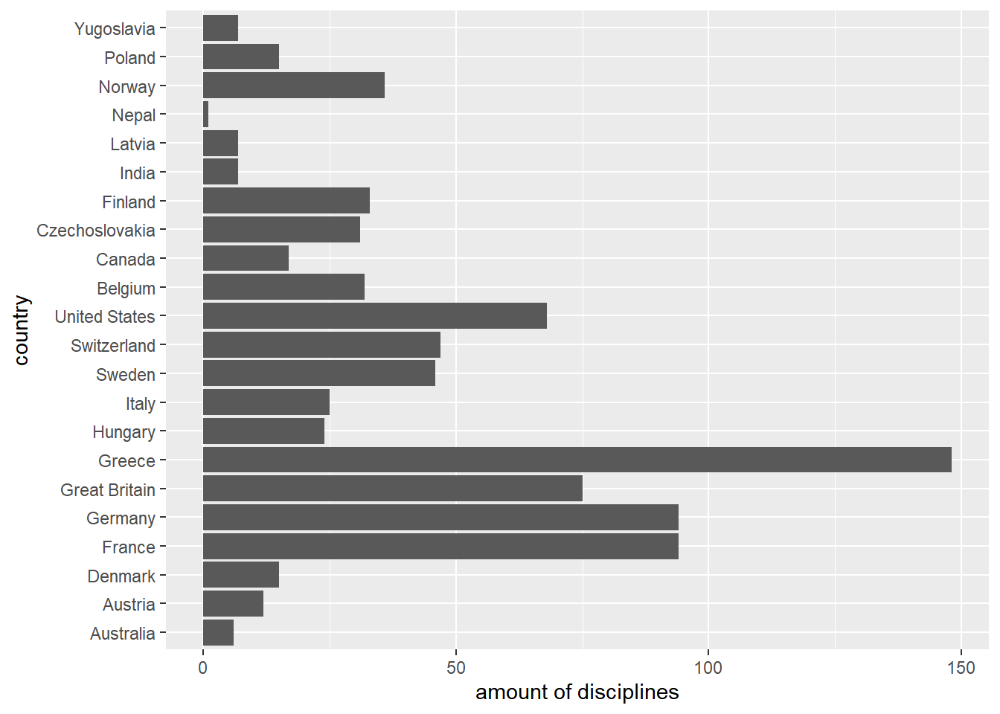
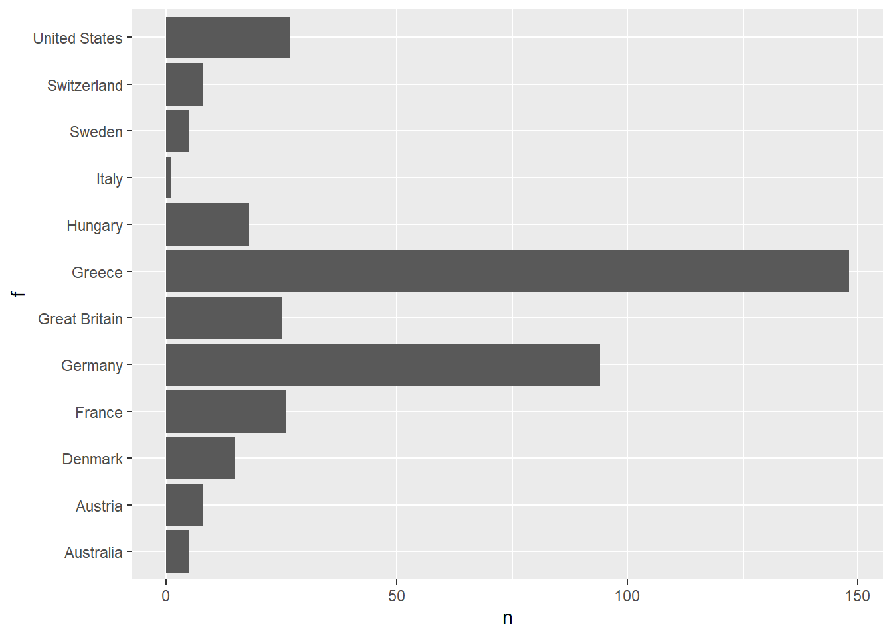
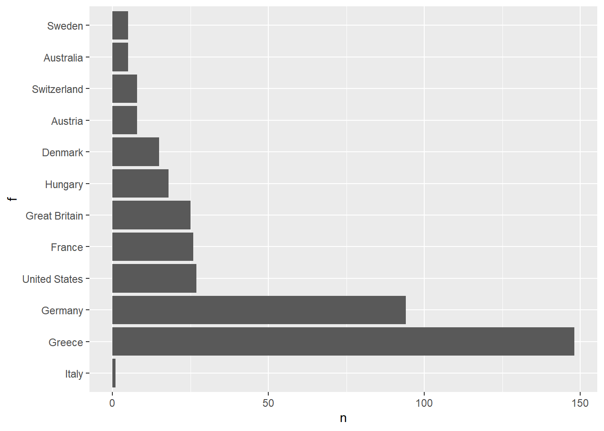
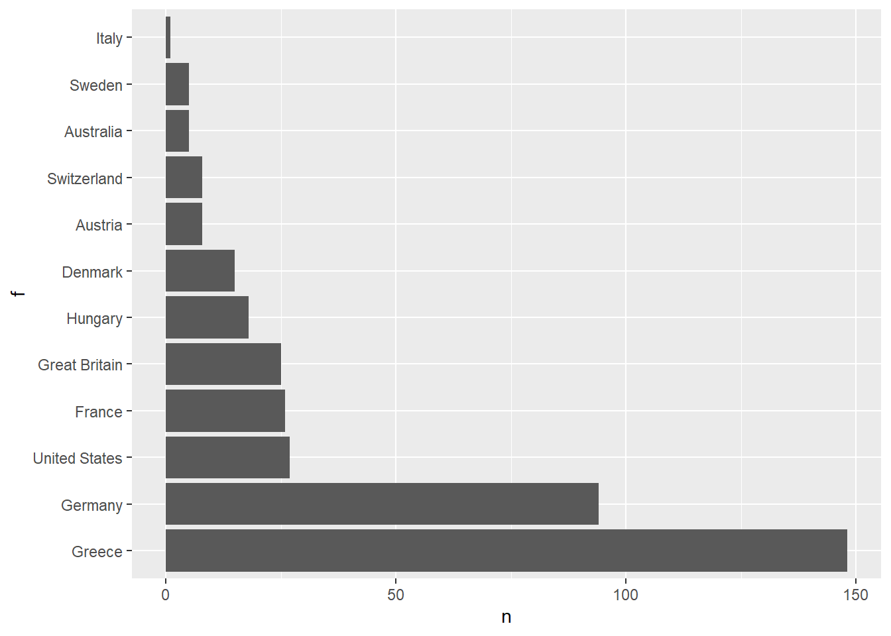

5 Categorical data: forcats
5.1 Introduction
This chapter is dedicated to the handling of categorical variables. This becomes important if information is to be presented in a non-alphabetical order or aggregated in a meaningful way. Within the R programming language, categorical variables are converted into a form that can be used for analysis using factors. While many Base-R functions automatically convert character vectors into factors, tidyverse requires an explicit treatment. The core-tidyverse provides the package forcats, which will be described here. Further information and exercises are available at the sources shown.
Resources:
In this chapter we use the demo data set “diamonds” from the ggplot2-package (more information) as well as a dataset “olympic-games” which shows the medal success of olympic athletes from 1896 to 2016. For the latter we focus on the summer games 1896 and the winter games 1924 for practical reasons. Before you start reading, you should have read the chapter Wrangling Data: dplyr or be familiar with this field.
library(tidyverse) # the package tidyverse contains all libraries necessary for this chapter
diamonds <- read_csv("data/diamonds.csv") # Importing the "diamonds" dataset
olympic <- read_csv("data/olympic-games.csv") # Importing the "olympic-games" dataset
head(diamonds, 2) # Have a short look at the data5.2 General functions
5.2.1 Create
Basically two things are needed to create a factor:
- a vector which contains the values to be analyzed
- another vector which divides the values into levels
As an example we will use the column clarity of the diamonds dataset.
It is a categorical evaluation of the clarity of a diamond and a subset of the grades according to the Gemological Institute of America (GIA) grading system. The grades according to GIA read as follows:
| GIA grade | Category | Included in diamonds |
|---|---|---|
| FL | Flawless | ✘ |
| IF | Internally Flawless | ✔ |
| VVS1 | Very Very Slightly Included1 | ✔ |
| VVS2 | Very Very Slightly Included2 | ✔ |
| VS1 | Very Slightly Included1 | ✔ |
| VS2 | Very Slightly Included2 | ✔ |
| SI1 | Slightly Included1 | ✔ |
| SI2 | Slightly Included2 | ✔ |
| I1 | Included1 | ✔ |
| I2 | Included2 | ✘ |
| I3 | Included3 | ✘ |
If you are interested in the distribution of the diamonds in this category, you could do this by using a suitable query:
diamonds %>%
group_by(clarity) %>%
count() %>% # count the number of observations per clarity grade
ggplot(aes(clarity, n)) +
geom_col()
A sorting of the x-axis, which follows the order of the grades as shown in the table above, is unfortunately not possible in this form. A workaround is to convert the column clarity into a factor, which allows us to evaluate the individual categories. For this purpose we first define a vector, which ranks the categories according to their grade (from bad to good):
In the next step we lay this newly created levels vector on the column clarity of our data set to create a factor. factor() is a base-R function.
factor_clarity consists solely of the clarity column of the original diamonds data set.
Another possibility to create a factor is to convert a vector using as_factor(). Here the levels are created automatically. Their order however depends on the appearance of the corresponding value in the source vector.
## [1] "SI2" "SI1" "VS1" "VS2" "VVS2" "VVS1" "I1" "IF"5.2.2 Count values per level
Now we repeat the analysis of the distribution within our dataset using the created factor. The function fct_count() returns the frequency of a categorical value within a factor. The order of the levels remains unchanged.
fct_count(factor_clarity) %>%
ggplot(aes(clarity, n)) + #the definition of aes. mapping in this line is only used to label the axes
geom_col(aes(f, n))
It becomes obvious that the distribution can now be displayed in the desired order (by valence). Functions of the package forcats always start with the prefix fct_.
5.2.3 Inspect and set levels
With the function levels() the levels of a factor can be both read and defined. But be aware: this can only be used to change the names, not the order of the levels. The base-R function unclass() gives information about the internal memory structure of a factor.
## [1] "I1" "SI2" "SI1" "VS2" "VS1" "VVS2" "VVS1" "IF"## [1] 2 3 5 4 2 6 7 3 4 5 3 5 3 2 2 1 2 3 3 3 2 4 5 3 3
## attr(,"levels")
## [1] "I1" "SI2" "SI1" "VS2" "VS1" "VVS2" "VVS1" "IF"#remain the semantic order but replace the technical jargon with something understandable
levels_clarity_c <- c("c8", "c7", "c6", "c5", "c4", "c3", "c2", "c1")
levels(factor_clarity) <- levels_clarity_c
factor_clarity %>% head(25)## [1] c7 c6 c4 c5 c7 c3 c2 c6 c5 c4 c6 c4 c6 c7 c7 c8 c7 c6 c6 c6 c7 c5 c4 c6 c6
## Levels: c8 c7 c6 c5 c4 c3 c2 c15.2.4 Inspect unique values
The function fct_unique() can be used to output unique values of a factor. In contrast to the base-R function unique() the values are returned in the order of the levels and not in the order of their appearance.
## [1] c8 c7 c6 c5 c4 c3 c2 c1
## Levels: c8 c7 c6 c5 c4 c3 c2 c1## [1] c7 c6 c4 c5 c3 c2 c8 c1
## Levels: c8 c7 c6 c5 c4 c3 c2 c15.3 Combine factors
5.3.1 Combine factors with different levels
With the function fct_c() factors with different levels can be combined to one factor covering all levels. First we create two factors. The first one shows the amount of contested disciplines by several countries during the olympic sommer games 1896. The second one shows the amount of contested disciplines by countries during the olympic winter games 1924.
Note, that the default option for the levels argument in factor() is a sorted set of the given values. As R sorts characters lexicographically. the corresponding levels are the countries sorted alphabetically from A to Z.
olympic_1896 <- olympic %>% filter(game == "1896 Summer")
# Using default option for `levels` argument in factor()
countries_in_1896 <- factor(olympic_1896$country)
olympic_1924 <- olympic %>% filter(game == "1924 Winter")
# The default option for the `levels` argument in factor
countries_in_1924 <- factor(olympic_1924$country)The factors differ both in their stored categorical data and in their set levels. A plot makes this clear:
countries_in_1896 %>%
fct_count() %>%
ggplot(aes(`amount of disciplines`, country))+
geom_col(aes(n, f))
countries_in_1924 %>%
fct_count() %>%
ggplot(aes(`amount of disciplines`, country))+
geom_col(aes(n, f))
Now we combine the factors with fct_c() and plot it:
fct_c(countries_in_1896, countries_in_1924) %>%
fct_count() %>%
ggplot(aes(`amount of disciplines`, country))+
geom_col(aes(n,f))
Both the underlying categorical data and the defined levels were combined in one factor.
5.3.2 Standardise levels of various factors
With the function fct_unify() the levels of different factors can be standardised. Please note, both input and output are in list form.
factor_list <- fct_unify(list(countries_in_1896, countries_in_1924))
# plotting the first factor
factor_list[[1]] %>%
fct_count() %>%
ggplot() +
geom_col(aes(n, f))

In this case, the underlying categorical data was left unchanged for both factors, but the levels were standardised. This is especially useful when comparing the categorical data of two different factors.
5.4 Order of levels
5.4.1 Manual reordering of levels
With the function fct_relevel() the levels of a factor can be reordered. In contrast to the function levels(), which only allows the renaming of factor levels, fct_relevel() also adjusts the order of the levels themselves, that is the way they are stored internally. An example should clarify this.
# The wrong approach (this is semantical wrong):
levels(factor_clarity) <- c("c1","c3","c5","c7","c2","c4","c6","c8")
factor_clarity %>%
fct_count()#tidy up
levels(factor_clarity) <- levels_clarity_c
# The right approach:
factor_clarity %>%
fct_relevel(c("c1","c3","c5","c7","c2","c4","c6","c8")) %>%
fct_count()As you can see, only the function fct_relevel() allows a correct relevel.
5.4.2 Reordering by frequency
Especially for plots it is often useful to orient the order of the levels on the frequency of the corresponding values. The function fct_infreq() allows exactly this. Plotting the unsorted factor leads to a difficult readability.

The better approach is to sort the data before plotting.
countries_in_1896 %>%
fct_infreq() %>% #insert fct_infreq() to get the data ordered
fct_count() %>%
ggplot(aes(n, f)) +
geom_col()
5.4.3 Reordering by appearance
The package forcats offers with the function fct_inorder() the possibility to orientate the order of the levels of a factor to the occurence of the corresponding categorical data in the data set. To make this clear, we take a look at the unique values with the first 20 entries in the corresponding data set:
## [1] "Greece" "Great Britain" "Switzerland" "United States"
## [5] "Germany"Create a factor in the appropriate order of levels:
## [1] "Greece" "Great Britain" "Switzerland" "United States"
## [5] "Germany" "France" "Hungary" "Australia"
## [9] "Austria" "Denmark" "Italy" "Sweden"5.4.4 Reverse level order
The function fct_rev() reverses the existing order of the levels of a factor. First have a look at the original order:
countries_in_1896 %>%
fct_infreq() %>% #insert fct_infreq() to get the data ordered
fct_count() %>%
ggplot(aes(n, f)) +
geom_col() Now we reverse the order:
countries_in_1896 %>%
fct_infreq() %>% #insert fct_infreq() to get the data ordered
fct_rev() %>% #insert fct_rev() to reverse this order
fct_count() %>%
ggplot(aes(n, f)) +
geom_col()
5.4.5 Shift levels
The argument n in the function fct_shift() allows to shift the levels to the left (right) for negative (positive) integer values of n, wrapping around end.
Thus a value of n = -1L would shift the order of the levels to the left by one location.
countries_in_1896 %>%
fct_infreq() %>% #insert fct_infreq() to get the data ordered
fct_shift(n = -1L) %>% #insert fct_shift() to shift levels
fct_count() %>%
ggplot(aes(n, f)) +
geom_col()
5.4.6 Randomly permute levels
The level of a factor can also be randomly shuffeled using fct_shuffle(). The input argument can be either a factor or a character vector, whereas the output will be a factor. By way of example, this is demonstrated using the factor countries_in_1896:
orig_levels <- countries_in_1896 %>% levels() # the original levels are sorted alphabetically
orig_levels %>% print()## [1] "Australia" "Austria" "Denmark" "France"
## [5] "Germany" "Great Britain" "Greece" "Hungary"
## [9] "Italy" "Sweden" "Switzerland" "United States"shuffled_factor <- orig_levels %>% fct_shuffle()
shuffled_levels <- shuffled_factor %>% levels() # the shuffled levels are randomly sorted
shuffled_levels %>% print()## [1] "Austria" "Australia" "Greece" "France"
## [5] "Italy" "Germany" "Sweden" "United States"
## [9] "Switzerland" "Great Britain" "Hungary" "Denmark"5.4.7 Reordering levels by other variables
The functions presented in this section bare great similarity to the fct_relevel() function introduced in the beginning of this section.
fct_relevel() allows for a direct manipuation of the levels by passing the new order to the levels keyword argument. In this regard fct_reorder() and fct_reorder2() are different, as the levels are reordered according to the result of a function applied to a vector. The example below is intended to unravel this behavior.